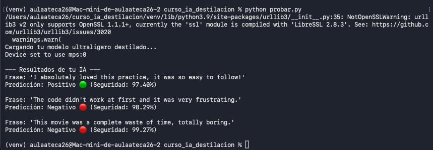
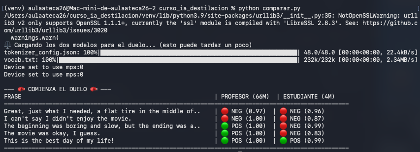

Manual técnico de compresión de LLMs: De 66M a 4M de parámetros.
Hecho por Gema Beato
El primer desafío fue preparar el Mac mini para Deep Learning utilizando la aceleración por hardware MPS (Metal Performance Shaders) en lugar de CUDA (NVIDIA).
Comandos ejecutados:
# Creación del entorno aislado
python3 -m venv venv
source venv/bin/activate
# Instalación de librerías optimizadas
pip install torch torchvision transformers datasets accelerateCreamos el archivo destilar.py. El objetivo era usar DistilBERT (Profesor) para enseñar a BERT-Tiny (Estudiante) usando la divergencia KL.
TypeError: compute_loss() got an unexpected keyword argument 'num_items_in_batch'
Actualizamos la firma de la función añadiendo **kwargs para hacerla compatible con las nuevas versiones de Hugging Face.
TypeError: forward() got an unexpected keyword argument 'token_type_ids'
El Profesor no soportaba ciertos inputs del Estudiante. Filtramos el diccionario de entrada antes de pasarlo al modelo gigante.
Una vez depurado el código, lanzamos el entrenamiento. El uso de device="mps" fue clave para lograr velocidad.
Al finalizar las 3 épocas, logramos una compresión masiva con una pérdida mínima de calidad.
Al principio, el modelo falló al probar frases en español (clasificaba todo como negativo). Descubrimos que el Profesor solo sabía inglés.
Al cambiar las pruebas al inglés, el modelo demostró su verdadero potencial:
Enfrentamos al Profesor (66M) contra el Estudiante (4M) con acertijos lógicos y sarcasmo.
